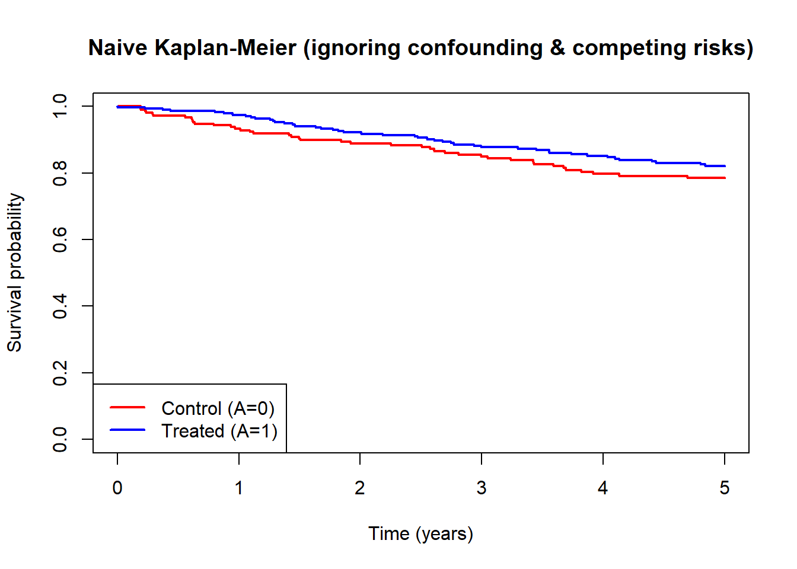
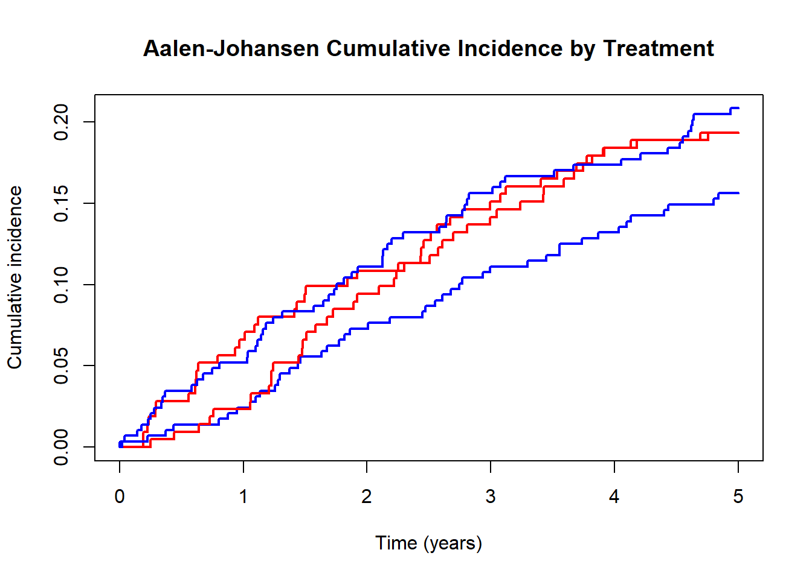

After completing this chapter, you will be able to:
Distinguish risk at time t, restricted mean survival time (RMST), and hazard ratios as causal estimands, and articulate why hazard ratios have problematic causal interpretations
Map ICH E9(R1) intercurrent event strategies to censoring and handling approaches in TMLE
Implement IPCW for informative censoring and diagnose weight instability at long follow-up
Compare Fine-Gray and cause-specific approaches to competing risks, and understand how TMLE handles competing events
Apply survival TMLE to estimate a marginal risk difference at time t with competing risks
The longitudinal methods from the preceding chapters extend naturally to time-to-event outcomes. The main new considerations are: choice of survival estimand, handling of informative censoring over time, and competing risks.
20.1 Time-to-Event Estimands
20.1.1 Risk at Time t
The counterfactual risk (cumulative incidence) at a pre-specified time point t:
\[\Psi = P(T^{a=1} \leq t) - P(T^{a=0} \leq t)\]
A marginal risk difference with a clear causal interpretation under standard identifiability assumptions.
20.1.2 Restricted Mean Survival Time (RMST)
The RMST up to time \(\tau\) is the area under the survival curve from 0 to \(\tau\):
\[\text{RMST}(\tau) = \int_0^\tau S(t) \, dt\]
The causal contrast is the difference in RMST between treatment arms—a summary of the entire survival curve up to \(\tau\) that does not require proportional hazards.
20.1.3 The Hazard Ratio Problem
Hazard Ratios Are Not Straightforward Causal Parameters
The hazard ratio has two fundamental problems as a causal quantity:
Non-collapsibility: The conditional HR (within strata) does not equal the marginal HR, even without confounding. A perfectly adjusted Cox model estimates a different quantity than the population-level effect.
Built-in selection bias: The hazard at time t is defined only among survivors to t. Even in a randomized trial, comparing hazards at later times compares differentially selected groups.
For causal inference, prefer risk differences, risk ratios at fixed time points, or RMST differences (Hernán and Robins 2016).
20.2 ICH E9(R1) Intercurrent Events and Censoring Strategies
The ICH E9(R1) addendum defines five strategies for intercurrent events, each mapping to a censoring or outcome-handling approach.
In development
This chapter is under active development. Content may be incomplete or change substantially.
Table 20.1: ICH E9(R1) strategies mapped to TMLE approaches
ICH E9(R1) Strategy
Description
TMLE Implementation
Treatment policy
Outcome observed regardless of intercurrent event
No censoring at intercurrent event; analyze all observed outcomes
Composite
Intercurrent event is part of the outcome
Redefine outcome to include the intercurrent event (e.g., death or discontinuation)
Hypothetical
Outcome in a world where the intercurrent event could not occur
Censor at intercurrent event and use IPCW to adjust for informative censoring
Principal stratum
Effect among those who would not experience the intercurrent event under either treatment
Requires principal stratification; typically not handled by standard TMLE
While on treatment
Outcome while on assigned treatment
Censor at treatment discontinuation; use IPCW for informative censoring
The hypothetical and while-on-treatment strategies both require IPCW. The key difference is what triggers censoring: under the hypothetical strategy, a biological event (e.g., a competing risk) triggers censoring, while under the while-on-treatment strategy, treatment discontinuation triggers censoring.
20.3 Informative Censoring and IPCW
IPCW applies the same inverse-weighting logic from the IPTW chapter to censoring: upweight individuals who remain uncensored but resemble those who were censored. At each time point \(t_k\):
Because IPCW weights are a product over time points, instability compounds. With per-period uncensored probability of 0.95, after 20 time points the weight is \(1/0.95^{20} \approx 2.65\); at 0.80 per period, weights explode to \(1/0.80^{20} \approx 87\). Positivity violations accumulate, effective sample size shrinks, and a few individuals can dominate the estimate.
Remedies: Truncate weights (with sensitivity analysis), restrict follow-up to a horizon with stable weights, or use TMLE’s targeting step for stabilization.
20.4 Competing Risks
A competing risk is an event that prevents the outcome of interest from occurring. For example, when studying time to cardiovascular death, non-cardiovascular death is a competing event.
20.4.1 Two Approaches
Cause-specific approach: Treat competing events as censoring. Estimates the cause-specific hazard, but the resulting survival curve lacks a probability interpretation when competing risks exist.
Fine-Gray (subdistribution) approach: Keep individuals in the risk set after competing events. Directly models the cumulative incidence function (CIF): the probability of the event by time t, accounting for competing events.
20.4.2 TMLE for Competing Risks
TMLE handles competing risks through: (1) IPCW for the competing event, targeting the cause-specific risk in a world without the competing event; (2) composite outcome, targeting the risk of any event by time t; or (3) direct CIF estimation, targeting the cumulative incidence function.
The scientific question determines the choice: “What would the risk be without the competing event?” calls for cause-specific IPCW; “What is the actual probability given competing events exist?” calls for the CIF approach.
20.5 Worked Example: Survival TMLE with Competing Risks
20.5.1 Data Simulation
Two-arm study with 500 patients, administrative censoring at 5 years, and a competing event (non-CV death competing with CV death).
Min. 1st Qu. Median Mean 3rd Qu. Max.
0.001064 2.675169 5.000000 3.919467 5.000000 5.000000
20.5.2 Naive Kaplan-Meier Estimate
Show code
library(survival)# Naive KM treating competing events as censoredkm_fit <-survfit(Surv(time, event ==1) ~ A, data = dat)plot(km_fit, col =c("red", "blue"), lwd =2,xlab ="Time (years)", ylab ="Survival probability",main ="Naive Kaplan-Meier (ignoring confounding & competing risks)")legend("bottomleft", c("Control (A=0)", "Treated (A=1)"),col =c("red", "blue"), lwd =2)

This KM estimate is biased: it ignores confounding and treats competing events as non-informative censoring.
20.5.3 Cumulative Incidence (Aalen-Johansen)
The Aalen-Johansen estimator accounts for competing risks but does not adjust for confounding.
Show code
# Cumulative incidence with competing riskslibrary(survival)# Multi-state event indicatordat$event_ms <-factor(dat$event, levels =0:2,labels =c("censor", "CV death", "Non-CV death"))cuminc_fit <-survfit(Surv(time, event_ms) ~ A, data = dat)plot(cuminc_fit, col =c("red", "blue"), lwd =2,xlab ="Time (years)", ylab ="Cumulative incidence",main ="Aalen-Johansen Cumulative Incidence by Treatment")

20.5.4 TMLE for Risk Difference at Time t
Causal risk difference for cardiovascular death at \(t = 3\) years, adjusting for confounding and competing events.
Show code
# --- TMLE for survival: risk difference at t = 3 ---# This uses a discretized hazard TMLE approach# Requires: survtmle package (install from GitHub if needed)# devtools::install_github("benkeser/survtmle")library(survtmle)# Discretize time for TMLE (quarterly intervals)t_target <-3# 3-year risk# Prepare data for survtmle# Treating competing events as censoring (cause-specific approach)result <-survtmle(ftime = dat$time,ftype = dat$event,trt = dat$A,adjustVars = dat[, c("age", "female", "comorbidity")],t0 = t_target,SL.ftime =c("SL.glm", "SL.mean"),SL.ctime =c("SL.glm", "SL.mean"),SL.trt =c("SL.glm", "SL.mean"),method ="hazard",ftypeOfInterest =1# CV death)# Extract risk differenceprint(result)# Risk under treatment vs control at t = 3risk_A1 <- result$est[2] # P(T <= 3 | do(A=1))risk_A0 <- result$est[1] # P(T <= 3 | do(A=0))RD <- risk_A1 - risk_A0cat(sprintf("Risk under A=1: %.3f\n", risk_A1))cat(sprintf("Risk under A=0: %.3f\n", risk_A0))cat(sprintf("Risk difference: %.3f\n", RD))
20.5.5 Diagnostic: Weight Trajectories and Effective Sample Size
Show code
# Demonstrate weight instability with a simple IPCW example# Fit a censoring modellibrary(survival)# Create indicators for censoring (event == 0 means administratively censored,# but we also treat competing events as a form of censoring for this exercise)dat$censored <-as.integer(dat$event ==0| dat$event ==2)# Time grid for diagnosticstime_grid <-seq(0.5, 4.5, by =0.5)# At each time point, compute weights for those still at riskweight_summary <-data.frame(time = time_grid,n_at_risk =NA,mean_weight =NA,max_weight =NA,ess =NA)# Simple time-varying censoring model for illustrationcens_model <-glm(censored ~ age + comorbidity + A,data = dat, family = binomial)p_uncens <-1-predict(cens_model, type ="response")for (i inseq_along(time_grid)) { t_k <- time_grid[i] at_risk <- dat$time >= t_k n_risk <-sum(at_risk)# Simplified cumulative weight (illustrative)# In practice, these would be computed from a discrete-time censoring model w <- (1/ p_uncens[at_risk])^(i) # cumulative product approximation w <- w /mean(w) # stabilize weight_summary$n_at_risk[i] <- n_risk weight_summary$mean_weight[i] <-mean(w) weight_summary$max_weight[i] <-max(w) weight_summary$ess[i] <-sum(w)^2/sum(w^2)}par(mfrow =c(1, 2))# Plot 1: Max weight over timeplot(weight_summary$time, weight_summary$max_weight, type ="b",pch =19, col ="darkred", lwd =2,xlab ="Time (years)", ylab ="Maximum weight",main ="Weight instability over time")abline(h =10, lty =2, col ="gray50")text(1, 10.5, "Concern threshold", col ="gray50", cex =0.8)# Plot 2: Effective sample size over timeplot(weight_summary$time, weight_summary$ess, type ="b",pch =19, col ="steelblue", lwd =2,xlab ="Time (years)", ylab ="Effective sample size",main ="ESS decreases with follow-up")abline(h =50, lty =2, col ="gray50")text(3, 55, "Minimum ESS threshold", col ="gray50", cex =0.8)par(mfrow =c(1, 1))
Figure 20.1: IPCW weight trajectories and effective sample size over time
20.6 Practical Diagnostics for Survival TMLE
20.6.1 Censoring Model Calibration
Show code
# Calibration of the censoring modelpred_cens <-predict(cens_model, type ="response")risk_groups <-cut(pred_cens, breaks =quantile(pred_cens, probs =c(0, 0.25, 0.5, 0.75, 1)),include.lowest =TRUE)cal_table <-aggregate(cbind(predicted = pred_cens, observed = dat$censored),by =list(risk_group = risk_groups),FUN = mean)print(cal_table)
ESS plot has a sudden drop: investigate what changed at that time point (e.g., a policy change causing differential censoring)
20.7 Check Your Understanding
Questions
Estimand choice: A colleague proposes a confounding-adjusted Cox model for a causal effect on survival. What are two problems, and what estimand would you recommend?
Competing risks: In a study of time to kidney transplant where death is a competing event, when would you (a) treat death as censoring with IPCW, and (b) use a cumulative incidence approach?
Weight diagnostics: ESS drops from 400 to 25 between year 1 and year 3. What does this indicate, and what are two strategies?
Answers
Non-collapsibility: the adjusted HR estimates a conditional quantity that differs from the marginal causal effect. (b) Built-in selection bias: hazard comparisons at later time points compare differentially selected survivors. Recommend marginal risk difference or RMST difference via TMLE.
IPCW treats death as censoring: “What would transplant rates be if patients could not die first?” (b) CIF approach: “What is the actual probability of transplant by time t, given that death can occur?” The first targets mechanism, the second targets clinical planning.
ESS drop indicates positivity violations or censoring model misspecification. Strategies: (a) Shorten the analysis horizon. (b) Truncate extreme weights and report as sensitivity analysis.
20.8 Sources and Further Reading
Hernán and Robins (2016): Target trial emulation framework and why estimand choice matters
Hernán, Miguel A, and James M Robins. 2016. “Using Big Data to Emulate a Target Trial When a Randomized Trial Is Not Available.”American Journal of Epidemiology 183 (8): 758–64.
Source Code
# Time-to-Event, Censoring, and Competing Risks with Targeted Learning {#sec-tte-competing}::: {.callout-tip}## Learning ObjectivesAfter completing this chapter, you will be able to:1. Distinguish risk at time *t*, restricted mean survival time (RMST), and hazard ratios as causal estimands, and articulate why hazard ratios have problematic causal interpretations2. Map ICH E9(R1) intercurrent event strategies to censoring and handling approaches in TMLE3. Implement IPCW for informative censoring and diagnose weight instability at long follow-up4. Compare Fine-Gray and cause-specific approaches to competing risks, and understand how TMLE handles competing events5. Apply survival TMLE to estimate a marginal risk difference at time *t* with competing risks:::The longitudinal methods from the preceding chapters extend naturally to time-to-event outcomes. The main new considerations are: choice of survival estimand, handling of informative censoring over time, and competing risks.## Time-to-Event Estimands {#sec-tte-estimands}### Risk at Time *t*The counterfactual risk (cumulative incidence) at a pre-specified time point *t*:$$\Psi = P(T^{a=1} \leq t) - P(T^{a=0} \leq t)$$A marginal risk difference with a clear causal interpretation under standard identifiability assumptions.### Restricted Mean Survival Time (RMST)The RMST up to time $\tau$ is the area under the survival curve from 0 to $\tau$:$$\text{RMST}(\tau) = \int_0^\tau S(t) \, dt$$The causal contrast is the difference in RMST between treatment arms---a summary of the entire survival curve up to $\tau$ that does not require proportional hazards.### The Hazard Ratio Problem::: {.callout-warning}## Hazard Ratios Are Not Straightforward Causal ParametersThe hazard ratio has two fundamental problems as a causal quantity:1. **Non-collapsibility**: The conditional HR (within strata) does not equal the marginal HR, even without confounding. A perfectly adjusted Cox model estimates a different quantity than the population-level effect.2. **Built-in selection bias**: The hazard at time *t* is defined only among survivors to *t*. Even in a randomized trial, comparing hazards at later times compares differentially selected groups.For causal inference, prefer risk differences, risk ratios at fixed time points, or RMST differences [@hernan2016target].:::## ICH E9(R1) Intercurrent Events and Censoring Strategies {#sec-ich-e9r1}The ICH E9(R1) addendum defines five strategies for intercurrent events, each mapping to a censoring or outcome-handling approach.::: {.callout-warning}## In developmentThis chapter is under active development. Content may be incomplete or change substantially.:::| ICH E9(R1) Strategy | Description | TMLE Implementation ||-------------------:|-------------|---------------------|| **Treatment policy** | Outcome observed regardless of intercurrent event | No censoring at intercurrent event; analyze all observed outcomes || **Composite** | Intercurrent event is part of the outcome | Redefine outcome to include the intercurrent event (e.g., death or discontinuation) || **Hypothetical** | Outcome in a world where the intercurrent event could not occur | Censor at intercurrent event and use IPCW to adjust for informative censoring || **Principal stratum** | Effect among those who would not experience the intercurrent event under either treatment | Requires principal stratification; typically not handled by standard TMLE || **While on treatment** | Outcome while on assigned treatment | Censor at treatment discontinuation; use IPCW for informative censoring |: ICH E9(R1) strategies mapped to TMLE approaches {#tbl-ich-e9r1}The **hypothetical** and **while-on-treatment** strategies both require IPCW. The key difference is what triggers censoring: under the hypothetical strategy, a biological event (e.g., a competing risk) triggers censoring, while under the while-on-treatment strategy, treatment discontinuation triggers censoring.## Informative Censoring and IPCW {#sec-ipcw}IPCW applies the same inverse-weighting logic from the IPTW chapter to censoring: upweight individuals who remain uncensored but resemble those who were censored. At each time point $t_k$:$$W_C(t_k) = \prod_{j=1}^{k} \frac{1}{P(C > t_j \mid C > t_{j-1}, \bar{A}_{j-1}, \bar{L}_{j-1})}$$::: {.callout-important}## Cumulative Weight InstabilityBecause IPCW weights are a *product* over time points, instability compounds. With per-period uncensored probability of 0.95, after 20 time points the weight is $1/0.95^{20} \approx 2.65$; at 0.80 per period, weights explode to $1/0.80^{20} \approx 87$. Positivity violations accumulate, effective sample size shrinks, and a few individuals can dominate the estimate.**Remedies**: Truncate weights (with sensitivity analysis), restrict follow-up to a horizon with stable weights, or use TMLE's targeting step for stabilization.:::## Competing Risks {#sec-competing-risks}A competing risk is an event that prevents the outcome of interest from occurring. For example, when studying time to cardiovascular death, non-cardiovascular death is a competing event.### Two Approaches**Cause-specific approach**: Treat competing events as censoring. Estimates the cause-specific hazard, but the resulting survival curve lacks a probability interpretation when competing risks exist.**Fine-Gray (subdistribution) approach**: Keep individuals in the risk set after competing events. Directly models the cumulative incidence function (CIF): the probability of the event by time *t*, accounting for competing events.### TMLE for Competing RisksTMLE handles competing risks through: (1) **IPCW for the competing event**, targeting the cause-specific risk in a world without the competing event; (2) **composite outcome**, targeting the risk of any event by time *t*; or (3) **direct CIF estimation**, targeting the cumulative incidence function.The scientific question determines the choice: "What would the risk be without the competing event?" calls for cause-specific IPCW; "What is the actual probability given competing events exist?" calls for the CIF approach.## Worked Example: Survival TMLE with Competing Risks {#sec-tte-example}### Data SimulationTwo-arm study with 500 patients, administrative censoring at 5 years, and a competing event (non-CV death competing with CV death).```{r}#| label: sim-tte-data#| code-fold: showset.seed(2026)n <-500# Baseline covariatesage <-rnorm(n, mean =65, sd =10)female <-rbinom(n, 1, 0.45)comorbidity <-rbinom(n, 1, 0.3)# Treatment assignment (observational, depends on covariates)ps <-plogis(-1+0.02* age +0.3* comorbidity)A <-rbinom(n, 1, ps)# Event times (cardiovascular death)lambda_cv <-exp(-5+0.03* age +0.5* comorbidity -0.4* A)T_cv <-rexp(n, rate = lambda_cv)# Competing event times (non-cardiovascular death)lambda_noncv <-exp(-5.5+0.04* age +0.2* comorbidity -0.1* A)T_noncv <-rexp(n, rate = lambda_noncv)# Administrative censoring at 5 yearsC_admin <-5# Observed dataT_obs <-pmin(T_cv, T_noncv, C_admin)event_type <-ifelse(T_obs == C_admin, 0, # censoredifelse(T_obs == T_cv, 1, # CV death2)) # non-CV deathdat <-data.frame(age = age,female = female,comorbidity = comorbidity,A = A,time = T_obs,event = event_type)# Summarytable(dat$event)summary(dat$time)```### Naive Kaplan-Meier Estimate```{r}#| label: km-naive#| code-fold: showlibrary(survival)# Naive KM treating competing events as censoredkm_fit <-survfit(Surv(time, event ==1) ~ A, data = dat)plot(km_fit, col =c("red", "blue"), lwd =2,xlab ="Time (years)", ylab ="Survival probability",main ="Naive Kaplan-Meier (ignoring confounding & competing risks)")legend("bottomleft", c("Control (A=0)", "Treated (A=1)"),col =c("red", "blue"), lwd =2)```This KM estimate is biased: it ignores confounding and treats competing events as non-informative censoring.### Cumulative Incidence (Aalen-Johansen)The Aalen-Johansen estimator accounts for competing risks but does not adjust for confounding.```{r}#| label: aalen-johansen#| code-fold: show# Cumulative incidence with competing riskslibrary(survival)# Multi-state event indicatordat$event_ms <-factor(dat$event, levels =0:2,labels =c("censor", "CV death", "Non-CV death"))cuminc_fit <-survfit(Surv(time, event_ms) ~ A, data = dat)plot(cuminc_fit, col =c("red", "blue"), lwd =2,xlab ="Time (years)", ylab ="Cumulative incidence",main ="Aalen-Johansen Cumulative Incidence by Treatment")```### TMLE for Risk Difference at Time *t*Causal risk difference for cardiovascular death at $t = 3$ years, adjusting for confounding and competing events.```{r}#| label: tmle-survival#| eval: false#| code-fold: show# --- TMLE for survival: risk difference at t = 3 ---# This uses a discretized hazard TMLE approach# Requires: survtmle package (install from GitHub if needed)# devtools::install_github("benkeser/survtmle")library(survtmle)# Discretize time for TMLE (quarterly intervals)t_target <-3# 3-year risk# Prepare data for survtmle# Treating competing events as censoring (cause-specific approach)result <-survtmle(ftime = dat$time,ftype = dat$event,trt = dat$A,adjustVars = dat[, c("age", "female", "comorbidity")],t0 = t_target,SL.ftime =c("SL.glm", "SL.mean"),SL.ctime =c("SL.glm", "SL.mean"),SL.trt =c("SL.glm", "SL.mean"),method ="hazard",ftypeOfInterest =1# CV death)# Extract risk differenceprint(result)# Risk under treatment vs control at t = 3risk_A1 <- result$est[2] # P(T <= 3 | do(A=1))risk_A0 <- result$est[1] # P(T <= 3 | do(A=0))RD <- risk_A1 - risk_A0cat(sprintf("Risk under A=1: %.3f\n", risk_A1))cat(sprintf("Risk under A=0: %.3f\n", risk_A0))cat(sprintf("Risk difference: %.3f\n", RD))```### Diagnostic: Weight Trajectories and Effective Sample Size {#sec-tte-diagnostics}```{r}#| label: fig-weight-diagnostics#| fig-cap: "IPCW weight trajectories and effective sample size over time"#| code-fold: show# Demonstrate weight instability with a simple IPCW example# Fit a censoring modellibrary(survival)# Create indicators for censoring (event == 0 means administratively censored,# but we also treat competing events as a form of censoring for this exercise)dat$censored <-as.integer(dat$event ==0| dat$event ==2)# Time grid for diagnosticstime_grid <-seq(0.5, 4.5, by =0.5)# At each time point, compute weights for those still at riskweight_summary <-data.frame(time = time_grid,n_at_risk =NA,mean_weight =NA,max_weight =NA,ess =NA)# Simple time-varying censoring model for illustrationcens_model <-glm(censored ~ age + comorbidity + A,data = dat, family = binomial)p_uncens <-1-predict(cens_model, type ="response")for (i inseq_along(time_grid)) { t_k <- time_grid[i] at_risk <- dat$time >= t_k n_risk <-sum(at_risk)# Simplified cumulative weight (illustrative)# In practice, these would be computed from a discrete-time censoring model w <- (1/ p_uncens[at_risk])^(i) # cumulative product approximation w <- w /mean(w) # stabilize weight_summary$n_at_risk[i] <- n_risk weight_summary$mean_weight[i] <-mean(w) weight_summary$max_weight[i] <-max(w) weight_summary$ess[i] <-sum(w)^2/sum(w^2)}par(mfrow =c(1, 2))# Plot 1: Max weight over timeplot(weight_summary$time, weight_summary$max_weight, type ="b",pch =19, col ="darkred", lwd =2,xlab ="Time (years)", ylab ="Maximum weight",main ="Weight instability over time")abline(h =10, lty =2, col ="gray50")text(1, 10.5, "Concern threshold", col ="gray50", cex =0.8)# Plot 2: Effective sample size over timeplot(weight_summary$time, weight_summary$ess, type ="b",pch =19, col ="steelblue", lwd =2,xlab ="Time (years)", ylab ="Effective sample size",main ="ESS decreases with follow-up")abline(h =50, lty =2, col ="gray50")text(3, 55, "Minimum ESS threshold", col ="gray50", cex =0.8)par(mfrow =c(1, 1))```## Practical Diagnostics for Survival TMLE {#sec-surv-diagnostics}### Censoring Model Calibration```{r}#| label: cens-calibration#| code-fold: show# Calibration of the censoring modelpred_cens <-predict(cens_model, type ="response")risk_groups <-cut(pred_cens, breaks =quantile(pred_cens, probs =c(0, 0.25, 0.5, 0.75, 1)),include.lowest =TRUE)cal_table <-aggregate(cbind(predicted = pred_cens, observed = dat$censored),by =list(risk_group = risk_groups),FUN = mean)print(cal_table)```### Effective Sample Size Over TimeThe effective sample size (ESS) is the key diagnostic for weighted survival analyses:$$\text{ESS}(t) = \frac{\left(\sum_{i: T_i \geq t} w_i(t)\right)^2}{\sum_{i: T_i \geq t} w_i(t)^2}$$Rules of thumb:- ESS < 50 at your target time point: results are unreliable- ESS drops below 10% of nominal sample size: consider shortening follow-up- ESS plot has a sudden drop: investigate what changed at that time point (e.g., a policy change causing differential censoring)## Check Your Understanding::: {.callout-caution}## Questions1. **Estimand choice**: A colleague proposes a confounding-adjusted Cox model for a causal effect on survival. What are two problems, and what estimand would you recommend?2. **Competing risks**: In a study of time to kidney transplant where death is a competing event, when would you (a) treat death as censoring with IPCW, and (b) use a cumulative incidence approach?3. **Weight diagnostics**: ESS drops from 400 to 25 between year 1 and year 3. What does this indicate, and what are two strategies?:::::: {.callout-tip collapse="true"}## Answers1. (a) Non-collapsibility: the adjusted HR estimates a conditional quantity that differs from the marginal causal effect. (b) Built-in selection bias: hazard comparisons at later time points compare differentially selected survivors. Recommend marginal risk difference or RMST difference via TMLE.2. (a) IPCW treats death as censoring: "What would transplant rates be if patients could not die first?" (b) CIF approach: "What is the actual probability of transplant by time *t*, given that death can occur?" The first targets mechanism, the second targets clinical planning.3. ESS drop indicates positivity violations or censoring model misspecification. Strategies: (a) Shorten the analysis horizon. (b) Truncate extreme weights and report as sensitivity analysis.:::## Sources and Further Reading- @hernan2016target: Target trial emulation framework and why estimand choice matters